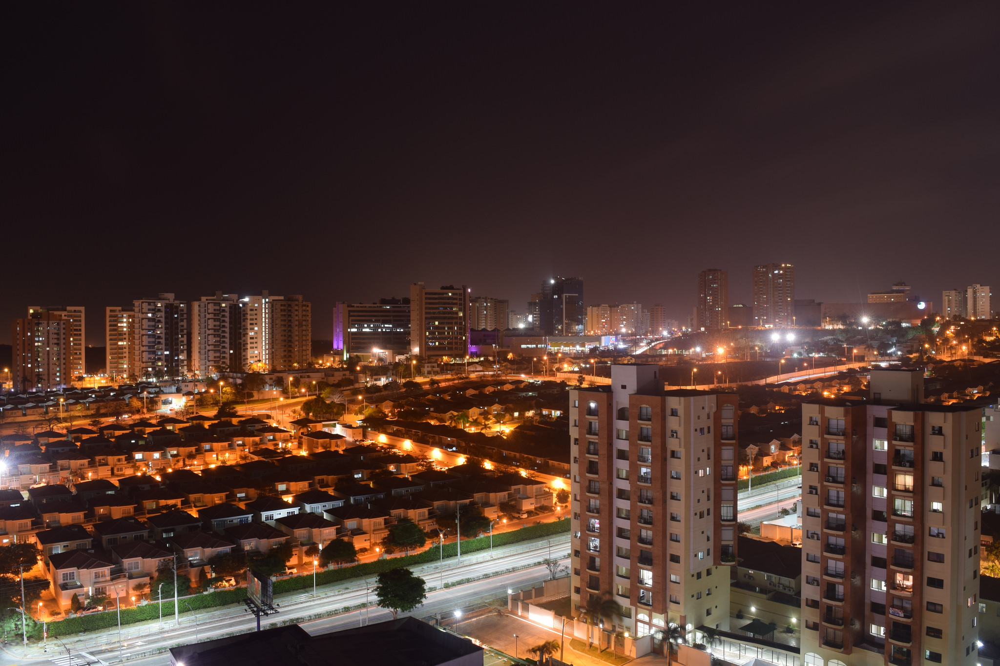

Barranquilla, oficialment Districte Especial, Industrial i Portuari de Barranquilla, és la capital del departament de l’Atlántico, Colòmbia. Està situada sobre la marge occidental del riu Magdalena a 7,5 km de la seva desembocadura en el mar Carib. El 1993 va ser organitzada constitucionalment en districte especial, industrial i portuari. És el principal centre econòmic de la Regió Carib de Colòmbia, entre les activitats econòmiques destaquen el comerç i la indústria.
L’establiment de la ciutat data de la tercera dècada del segle XVII, quan els sectors limítrofs al riu Magdalena es van començar a poblar al voltant de mercès atorgades per la Corona Espanyola. Durant l’època de la Independència, Barranquilla es va distingir pel suport dels seus habitants a la causa alliberadora, el que li va valer ser erigida en vila el 1813. A la segona meitat del segle XIX adquireix importància estratègica i econòmica a l’iniciar-se la navegació a vapor pel riu Magdalena, el que li va permetre convertir-se en el principal centre exportador del país fins a la primera meitat del segle XX. Des de fins del segle XIX fins als anys 1930, Barranquilla va ser el principal punt d’entrada a Colòmbia de milers d’immigrants i d’avenços com l’aviació, la ràdio comercial i la telefonia, així com de diversos esports.
